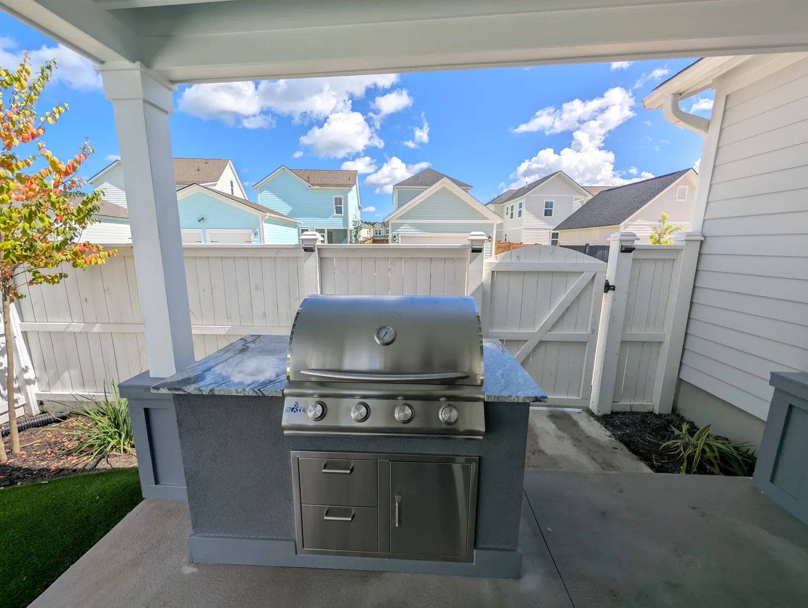
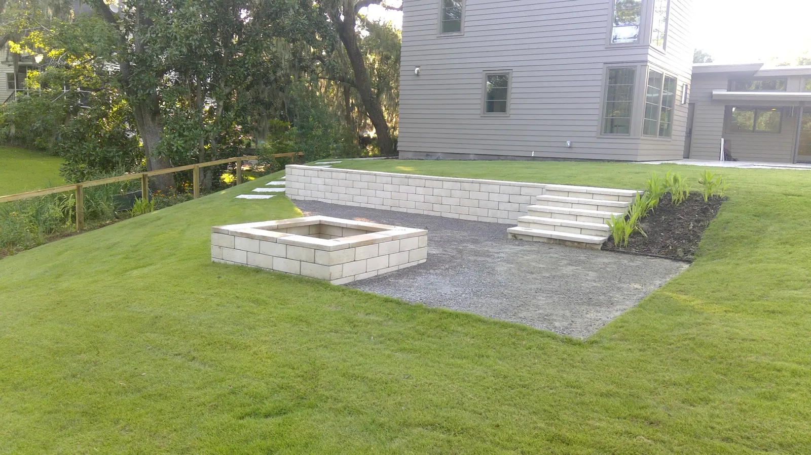
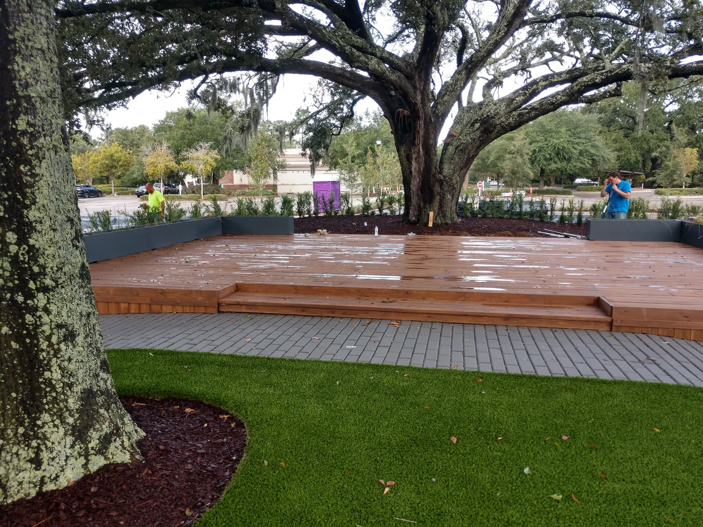

How Much Does an Outdoor Living Space Cost in Charleston?
A full outdoor living space in Charleston, combining hardscape, a structure, and an outdoor kitchen, typically lands somewhere between the mid five figures and well into six figures depending on scope. That range is wide because outdoor living covers everything from a simple patio refresh to a fully covered pavilion with a built-in kitchen, fireplace, and lighting system. Homeowners researching this question are usually trying to figure out where their own project might fall in that range, so here is what actually moves the number, feature by feature.
Patios and Hardscape

Patio cost depends on material choice and size. Concrete pavers and stamped concrete sit at a moderate price point, while natural stone runs higher for both material and labor. Site conditions matter too. A yard with good drainage and level grading costs less to prep than a sloped lot or one with standing water issues, since poor drainage often means additional grading, French drains, or catch basins before a single paver goes down. Hardscape installation covers patios, walkways, and the grading work that goes with them, and patios and pavers breaks down the specific material choices in more depth if you're still deciding between concrete, pavers, or natural stone.
Pergolas and Pavilions
An open pergola costs less than a fully covered pavilion because it uses less material and structural support. Wood pergolas sit at the more affordable end, while custom aluminum or cedar structures and fully roofed pavilions cost more but need less maintenance and provide real weather protection. Custom pergolas can be built in a range of materials depending on your budget and how much shade or coverage you want, and our pergolas and pavilions gallery shows the range of scope this can cover, from a simple shade structure over a small patio to a full pavilion built to anchor an entire backyard.
Outdoor Kitchens

Outdoor kitchen cost is driven almost entirely by appliance selection and countertop material. A basic setup with a built-in grill and small counter space costs far less than a full kitchen with a refrigerator, sink, plumbing, gas line runs, and premium countertop material like granite or quartzite. Plumbing and gas connections in particular add cost beyond the visible materials, since running lines to an outdoor kitchen means coordinating with the home's existing utilities rather than just building a countertop. Outdoor kitchen installation walks through the appliance and material options in more detail, including which choices tend to add the most cost and which tend to add the most day-to-day value.
Foundation Work
Every structure and kitchen needs a foundation underneath it, and this is a step homeowners often underestimate when budgeting. Charleston's sandy, moisture-heavy soil sometimes requires deeper footings or reinforced slabs depending on the size and weight of what is being built on top. A pergola sitting on a shallow, under-prepared base can start to shift within a few years, which ends up costing more in repairs than proper foundation work would have cost up front. Outdoor foundation work is priced based on soil conditions, slab size, and whether footings or a full slab pour are needed.
Retaining Walls and Grading

Some properties need retaining wall or grading work before an outdoor living space can even begin, particularly on sloped lots or properties with drainage issues feeding toward the house. Retaining walls add cost based on height, material, and linear footage, and are priced separately from the outdoor living features themselves since they solve a structural problem rather than an aesthetic one. If your property has any slope or standing water history, factor this into the budget conversation early rather than as a surprise mid-project.
Charleston-Specific Cost Factors
A few local factors push cost up compared to landscaping projects in drier, less humid regions. Permitting is required for most pergolas and pavilions in Charleston-area municipalities, and that process adds both time and a permitting fee to the project. Materials also need to hold up against heavy rain, humidity, and salt air, which usually means choosing more durable, and slightly more expensive, options over the cheapest available materials. Cutting costs on material grade in this climate tends to show up as a maintenance problem within a few seasons rather than a genuine savings.
How We Structure Estimates

Every project starts with a free on-site consultation, where we look at your property and talk through what you actually want the space to do. From there we put together a proposal broken out by feature, so you can see exactly what each piece costs and where there is room to phase the project if the full scope does not fit the budget right away. Many homeowners start with the patio and foundation work in one phase and add the kitchen or pergola in a second phase once the first phase is complete and budget allows.
What a Typical Project Breakdown Looks Like
It helps to walk through how the pieces stack on an actual project rather than looking at each feature in isolation. A composite mid-range outdoor living project in Charleston, combining a patio, a pergola, and a modest outdoor kitchen, usually breaks down roughly like this in terms of where the money goes: foundation and grading work takes up a meaningful share of the budget even though it's invisible in the finished photos, hardscape and patio materials take up the next largest share, the pergola or pavilion structure comes next, and the kitchen and appliances round out the total. Lighting and final landscaping tend to be a smaller percentage of the overall budget but make a disproportionate difference in how finished the space feels once it's done.
A smaller project, say a patio and fire pit without a full kitchen, shifts that balance considerably, since foundation work becomes a smaller share of a smaller total and there's no appliance or plumbing cost at all. This is worth understanding before your consultation, since it helps set realistic expectations about where cost-cutting is possible and where it isn't. Cutting foundation work to save money on a full kitchen and pergola build tends to cost more later in repairs than it saves up front.
What's Often Left Out of a Quote

A few costs catch homeowners off guard because they aren't always obvious from a surface-level estimate. Permitting fees for pergolas and pavilions are a real cost in most Charleston-area municipalities, and the timeline for approval can add weeks to a project schedule even when the fee itself is modest. Utility work, specifically running gas and water lines to an outdoor kitchen, is sometimes quoted separately from the kitchen structure itself, since it depends on how far the kitchen sits from existing utility connections in the house.
Site access can also affect cost in ways that aren't obvious until a contractor walks the property. A backyard that's easy to reach with equipment costs less to build in than one that requires materials to be carried in by hand around a house or through a narrow side yard. Similarly, removing an existing structure, like an old deck or a failing patio, adds demolition cost that a quote for new construction alone wouldn't include. Ask directly whether a quote includes site access, demolition of anything existing, and utility connections, since these are the most common gaps between an initial ballpark number and a final contract price.
DIY vs. Professional Installation Cost Considerations
Some homeowners consider handling parts of an outdoor living project themselves to save money, and for certain elements, that can make sense. Planting, mulching, and simple decorative lighting are reasonable areas for a hands-on homeowner to take on without much risk. Anything involving structural work, foundations, gas lines, or electrical and plumbing connections is a different story. Mistakes in footing depth or drainage planning can cause a structure to shift or fail years down the road, and improperly connected gas or plumbing lines create real safety risks, not just cosmetic ones.
The math on DIY savings also looks different once you factor in the cost of tool rental, the time investment, and the risk of having to redo work that wasn't done to code. For the structural and utility-connected portions of a project, hiring a licensed, insured contractor tends to be the more cost-effective choice over the life of the structure, even though the upfront number is higher than doing it yourself.
Financing and Phasing a Larger Project
Phasing works best when the foundation and structural work for the full eventual design happens in the first phase, even if the kitchen or fire feature gets added later. Building the foundation to support a future kitchen addition, for example, costs less than adding that support after the patio is already finished. If you know you want to expand the project down the road, say so during the design consultation so the first phase can be planned with that in mind rather than needing to be partially redone later.
Maintenance Costs to Factor In Long Term
Cost doesn't end at installation. Wood structures like pergolas benefit from periodic sealing to hold up against Charleston's humidity and rain, typically every couple of years depending on the wood type and exposure. Aluminum and reinforced concrete structures need less ongoing attention, which is part of why some homeowners choose them despite a higher upfront cost. Outdoor kitchen appliances benefit from an annual inspection of gas, electrical, and plumbing connections, both for safety and to catch small issues before they become expensive repairs. Weatherproof covers for appliances during the off-season or extended periods without use are a small cost that extends equipment life meaningfully.
Factoring a modest annual maintenance budget into your overall cost planning, rather than treating maintenance as an unexpected expense later, tends to lead to a better long-term outcome and protects the investment you made in the space.
How to Get an Accurate Quote for Your Property
Every property is different, and a quote based on averages will always be less accurate than one based on an actual site visit. Soil conditions, existing drainage, access for equipment, and the specific feature list you have in mind all affect the final number in ways that are hard to estimate from a general article like this one. The most reliable next step is a free on-site consultation, where our team walks the property, looks at the specific conditions your project will need to account for, and puts together a proposal broken out by feature so you know exactly where your budget is going.
Comparing Quotes From Different Contractors
If you're gathering more than one quote for an outdoor living project, and most homeowners should, it helps to know what to look for beyond the bottom-line number. A quote that's significantly lower than others is worth examining closely rather than treated as a win. Ask specifically whether foundation work, permitting, and utility connections are included, since a lower number sometimes reflects a narrower scope rather than better pricing on the same work.
It's also worth asking about material specifications directly rather than assuming "concrete patio" or "wood pergola" means the same thing across quotes. The grade of concrete, the type of wood, and the reinforcement used in a foundation can all vary significantly between contractors while being described in similarly general terms on paper. A detailed, itemized quote that specifies materials by name and grade is easier to compare fairly than a vague summary, and it protects you from surprises once construction begins.
Licensing and insurance are worth confirming directly as well, particularly for any structural work or utility connections. A contractor without proper insurance may offer a lower price, but any damage or injury during construction becomes the homeowner's financial responsibility rather than the contractor's.
Timing and Seasonal Cost Considerations
Charleston's landscaping and construction demand tends to peak in spring and early summer, when homeowners want their outdoor space ready for the warmer months ahead. Scheduling a project during a slower season, typically late fall or winter, can sometimes mean more flexible scheduling and less competition for a contractor's time, though material costs themselves don't tend to shift dramatically by season. If your timeline has any flexibility, it's worth asking whether off-peak scheduling affects availability or lead time, even if it doesn't change the underlying material cost.
Weather also factors into project timing beyond just contractor availability. Charleston's wetter months can slow exterior construction work, particularly foundation and concrete work that requires dry conditions to cure properly. Starting a project with enough buffer to account for potential weather delays tends to lead to a smoother experience than a tightly scheduled timeline with no room for a rained-out week or two.
Budgeting for the Full Vision, Even If Building in Phases
One of the more common mistakes homeowners make is budgeting only for the first phase of a project without accounting for how future phases will connect to it. If the eventual goal is a full outdoor living space with a kitchen, pergola, and dedicated fire feature area, it's worth having that full vision priced out even if only the first phase gets built this year. This lets the foundation, grading, and utility rough-in work happen once, sized correctly for the eventual full project, rather than needing to be revisited or expanded later at additional cost.
Homeowners who build in phases without this upfront planning sometimes find that phase two requires tearing into work completed during phase one, whether that's expanding a foundation that wasn't sized for a future kitchen or rerouting drainage that wasn't planned around a later addition. A single consultation covering the full long-term vision, even if construction happens over multiple years, avoids this kind of rework.
How Charleston Costs Compare to Other Markets
Homeowners relocating to Charleston from other parts of the country sometimes come in with cost expectations shaped by a different regional market, and it's worth understanding why those expectations may not translate directly. Coastal construction in general tends to carry a premium over inland regions, driven by material requirements suited to humidity and salt exposure, along with labor markets that reflect the broader cost of living and construction demand in a growing coastal city. Permitting requirements tied to Charleston's historic districts and coastal building codes also add a layer of process, and sometimes cost, that a homeowner moving from a rural or inland market may not have encountered before.
At the same time, Charleston's outdoor living market benefits from a long usable season compared to regions with harsh winters, which is part of why the investment tends to make more practical sense here even at a comparable or higher cost than a colder-climate market where the same space might sit unused for four or five months of the year.
Common Cost Questions From First-Time Outdoor Living Buyers
Homeowners planning their first major outdoor project often have a similar set of underlying concerns even when the specific questions vary. One recurring theme is uncertainty about whether a smaller initial project locks them out of expanding later. It doesn't, as long as the initial phase is planned with future expansion in mind, which is why we ask about your longer-term vision even for a homeowner who only wants to build a patio this year.
Another recurring concern is whether a lower quote from another contractor represents a genuinely better deal or a scope that's been quietly narrowed to hit a lower number. The honest answer is that it depends entirely on what's included, which is why itemized quotes matter more than a single bottom-line comparison. A homeowner comparing two quotes should be comparing the same scope of work, the same material grades, and the same warranty terms, not just two numbers on two pieces of paper.
A third common question involves whether it's worth waiting for a sale, discount, or off-season pricing before committing to a project. Material costs in this industry don't tend to fluctuate the way retail goods do, and waiting for a meaningful discount on landscaping and hardscape work is generally not a realistic expectation. Scheduling flexibility during slower seasons is the more realistic lever available to a patient homeowner, not a discount on materials themselves.
Frequently Asked Questions
What's included in a typical outdoor living space quote?
A full quote breaks out hardscape, structure, kitchen or fire feature, and foundation work separately, so you can see cost by component rather than one lump sum. It should also flag any expected permitting fees or utility work up front rather than surprising you mid-project.
Can I build an outdoor living space in phases to spread out cost?
Yes. Many homeowners start with the patio and foundation work, then add the pergola or kitchen in a later phase once budget allows. Planning the full design up front, even if construction happens in stages, keeps the finished result cohesive.
Does a pergola or pavilion require a permit in Charleston?
In most Charleston-area municipalities, yes. Small ground-level patios usually do not require a permit, but structures like pergolas and pavilions typically do, and permitting timelines should be factored into project planning.
What's the biggest hidden cost homeowners forget to budget for?
Foundation and grading work is the most commonly underestimated cost, since it's invisible in the finished space but essential to how long everything built on top of it will last.
Should I handle any part of the project myself to save money?
Smaller elements like planting or simple lighting can be reasonable DIY projects. Structural work, foundations, and any gas or plumbing connections should go to a licensed, insured contractor to avoid costly problems later.
How much should I budget for long-term maintenance?
Ongoing maintenance costs are modest compared to installation, covering things like periodic sealing for wood structures and occasional appliance inspection, but it's worth budgeting a small amount annually rather than treating it as a surprise.
How do I get an accurate cost estimate for my specific yard?
The only reliable way is an on-site consultation, since soil conditions, drainage, access, and your specific feature list all affect the final number.
Want a real number for your property?
Request a free consultation and we'll walk the site with you.
Planning a Project of Your Own?
See everything we design and build, or get in touch to talk through your ideas with Doug and Zach.